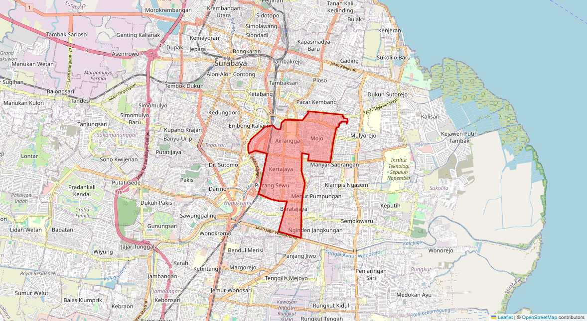
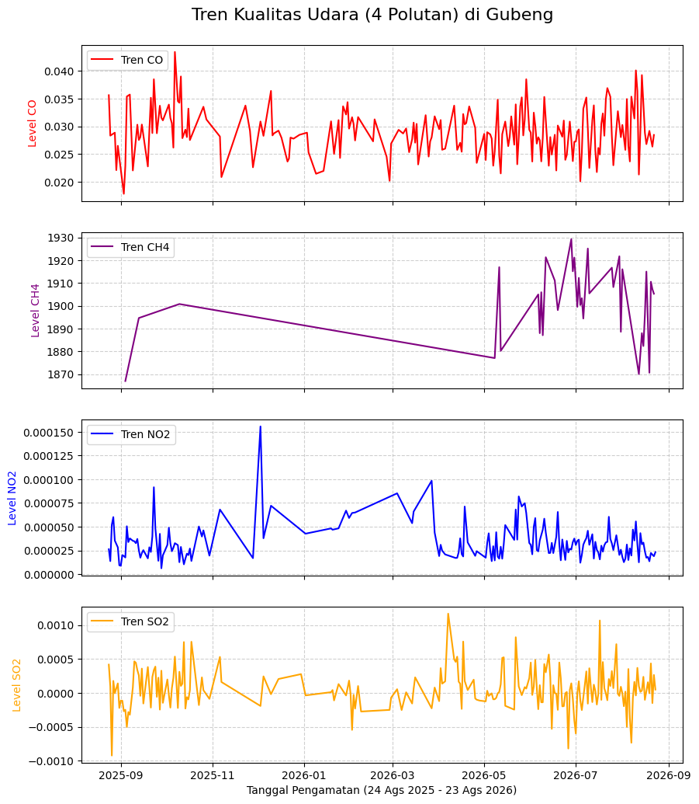
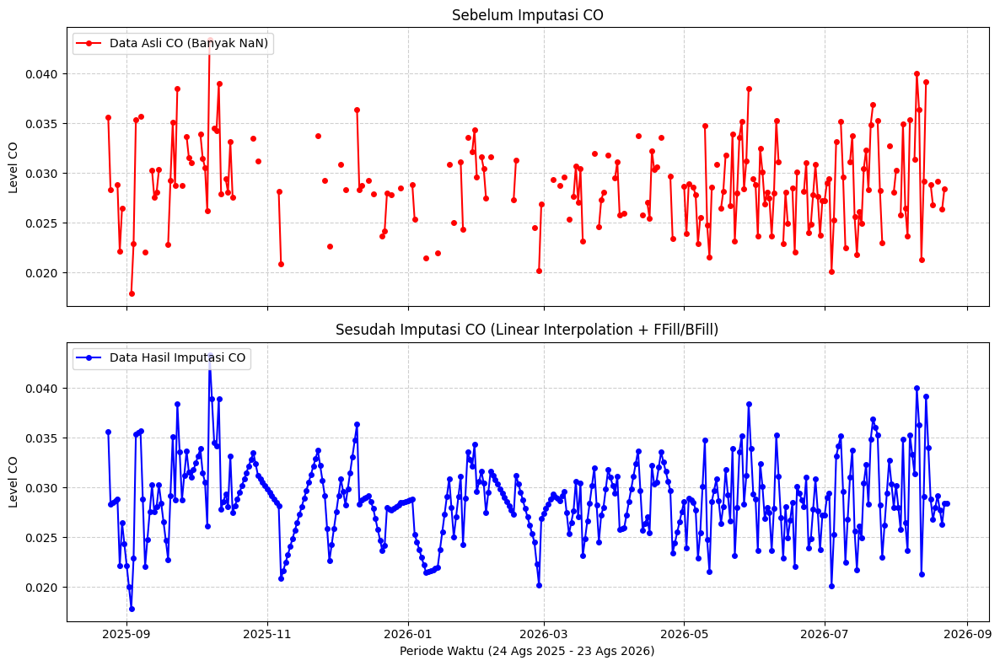
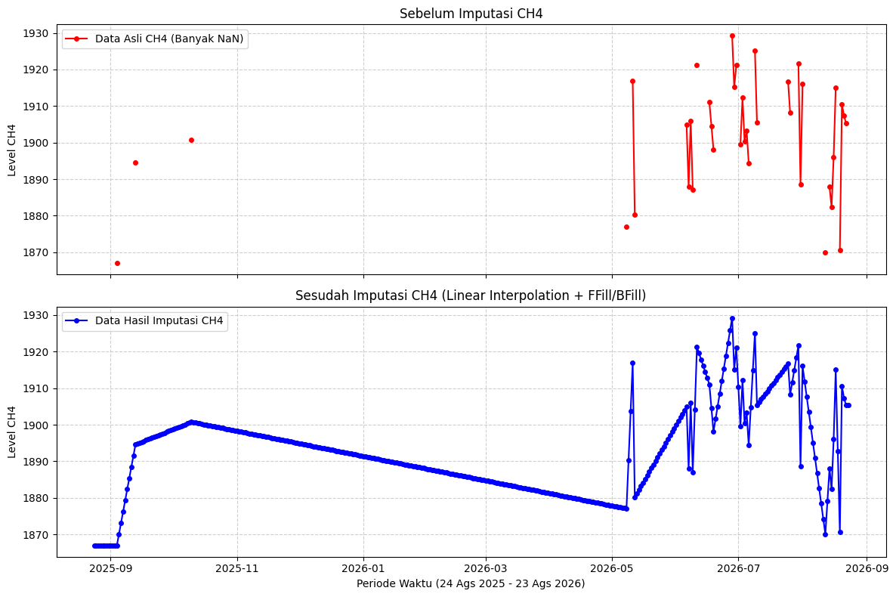
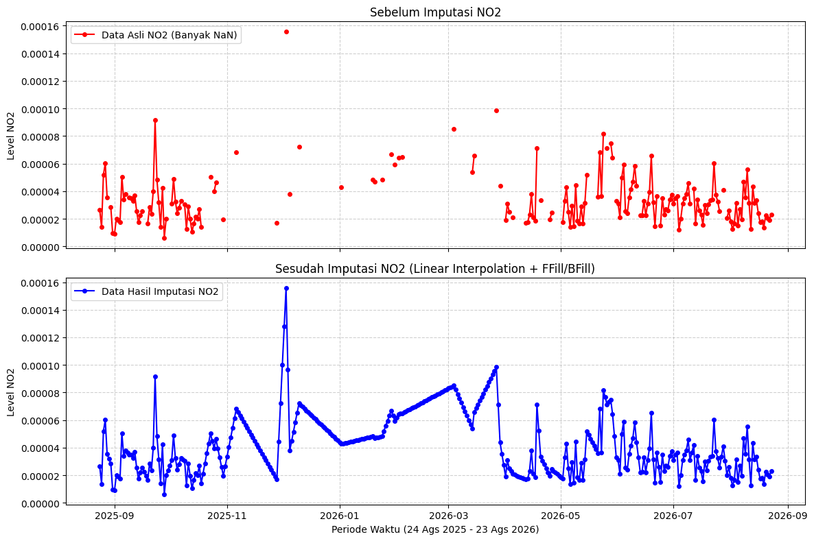
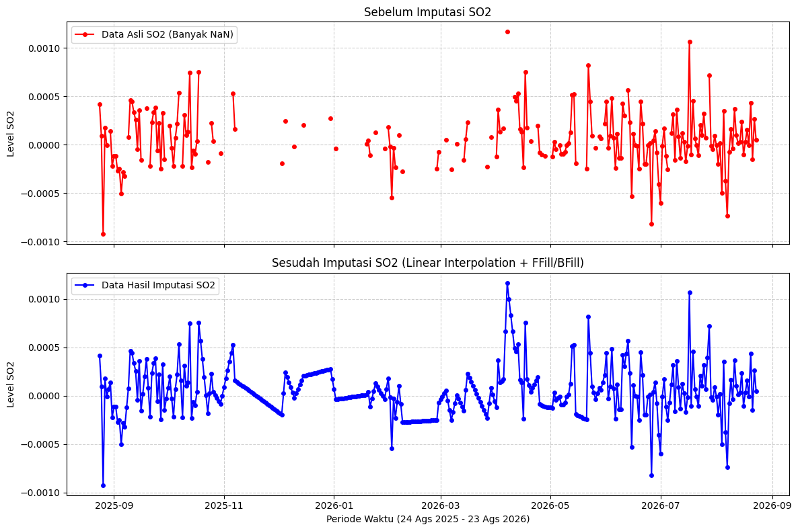

Analisis Time Series Empat Polutan Tingkat Kecamatan di Kota Surabaya Menggunakan TSFEL dan K-Means#
1. Business Understanding#
Latar Belakang dan Tujuan Penelitian#
Penelitian ini bertujuan untuk menganalisis karakteristik kualitas udara di wilayah Kecamatan Gubeng, Kota Surabaya, Jawa Timur. Observasi dilakukan menggunakan data spatio-temporal berbasis satelit dengan rentang waktu satu tahun, yaitu mulai dari 24 Agustus 2025 hingga 24 Agustus 2026. Data tersebut terdiri dari 365 titik data harian untuk setiap parameter polutan yang diamati.
Pada penelitian ini digunakan empat parameter gas polutan, yaitu Karbon Monoksida (CO), Metana (CH₄), Nitrogen Dioksida (NO₂), dan Sulfur Dioksida (SO₂). Keempat parameter tersebut akan melalui tahapan pemeriksaan dan persiapan data sebelum digunakan pada proses analisis lebih lanjut.
Tujuan penelitian ini adalah melakukan ekstraksi fitur menggunakan Time Series Feature Extraction Library (TSFEL) untuk memperoleh karakteristik dari masing-masing deret waktu polutan. Setiap polutan akan diekstraksi menjadi 68 fitur sehingga karakteristik dari keempat polutan dapat direpresentasikan dalam bentuk fitur numerik.
Selain proses ekstraksi fitur, penelitian ini juga melakukan identifikasi outlier menggunakan metode Interquartile Range (IQR) dan Z-Score. Kedua metode tersebut digunakan untuk membandingkan hasil pendeteksian outlier pada masing-masing polutan berdasarkan jumlah serta tanggal kemunculannya.
Hasil ekstraksi fitur dari keempat polutan selanjutnya akan digabungkan menjadi satu dataset. Dataset tersebut kemudian digunakan dalam proses K-Means Clustering untuk mengelompokkan data berdasarkan kemiripan karakteristik fitur yang dihasilkan dari masing-masing polutan.
Ruang Lingkup dan Skenario Pengolahan Data#
Proses pengolahan data diawali dengan pengumpulan data empat parameter gas polutan, yaitu CO, CH₄, NO₂, dan SO₂. Data diperoleh dari Sentinel-5P dengan wilayah pengamatan Kecamatan Gubeng, Kota Surabaya sebagai Area of Interest (AOI).
Pada tahap Data Understanding dan Data Preparation, data dari keempat polutan akan diperiksa berdasarkan jumlah data, rentang waktu, missing value, serta keberadaan outlier. Missing value akan ditangani menggunakan metode imputation, sedangkan outlier akan diidentifikasi menggunakan metode IQR dan dibandingkan dengan metode Z-Score.
Setelah data melalui proses pembersihan, masing-masing polutan akan diproses menggunakan TSFEL untuk menghasilkan 68 fitur. Dengan empat polutan yang digunakan, hasil ekstraksi fitur akan menghasilkan 272 fitur yang kemudian digabungkan menjadi satu dataset.
Tahap selanjutnya adalah melakukan preprocessing terhadap dataset hasil ekstraksi fitur sebelum digunakan dalam proses K-Means Clustering. Clustering dilakukan untuk mengetahui pengelompokan berdasarkan kemiripan karakteristik data yang direpresentasikan oleh fitur-fitur TSFEL dari keempat polutan.
Deskripsi Parameter Polutan#
Variabel polutan yang tercakup dalam dataset observasi wilayah Gubeng meliputi:
CO (Karbon Monoksida): Merupakan salah satu parameter gas polutan yang digunakan dalam analisis kualitas udara. Data CO akan diproses sebagai deret waktu dan diekstraksi menggunakan TSFEL untuk memperoleh karakteristik fitur.
CH₄ (Metana): Merupakan salah satu parameter gas yang terdapat dalam data pengamatan. Data CH₄ akan melalui proses persiapan data dan ekstraksi fitur untuk memperoleh karakteristik deret waktunya.
NO₂ (Nitrogen Dioksida): Merupakan parameter polutan yang digunakan untuk menggambarkan karakteristik kualitas udara pada wilayah pengamatan. Data NO₂ akan diperiksa, dibersihkan, dan diekstraksi menggunakan TSFEL.
SO₂ (Sulfur Dioksida): Merupakan parameter gas polutan yang turut digunakan dalam penelitian. Data SO₂ akan diproses melalui tahapan persiapan data dan ekstraksi fitur sebelum digabungkan dengan hasil ekstraksi dari polutan lainnya.
2. Data Understanding#
Pada tahap ini, kita akan mulai mengumpulkan data, mulai dari menarik data, kemudian kita akan mengupas data tersebut, sehingga kita dapat memahami secara utuh data apa yang sedang kita gunakan saat ini.
Mengumpulkan Data#
Kita akan menghubungkan Copernicus dengan koordinat Kecamatan Gubeng yang sudah kita ambil dari batas administrasi wilayah Kota Surabaya.
Data yang akan digunakan berasal dari Sentinel-5P dengan periode pengamatan selama satu tahun, yaitu mulai dari 24 Agustus 2025 sampai 24 Agustus 2026. Pada tahap pengambilan data ini, terdapat empat parameter polutan yang digunakan, yaitu CO, CH₄, NO₂, dan SO₂.
Setiap parameter akan diambil berdasarkan wilayah Kecamatan Gubeng sebagai Area of Interest (AOI). Data yang diperoleh dari Sentinel-5P kemudian akan diagregasi berdasarkan waktu menjadi data harian agar diperoleh satu nilai rata-rata untuk setiap hari. Selain itu, dilakukan agregasi spasial menggunakan nilai rata-rata pada wilayah AOI Kecamatan Gubeng sehingga diperoleh data deret waktu yang mewakili kondisi masing-masing polutan pada wilayah penelitian.
Setelah proses agregasi selesai, data untuk masing-masing polutan akan dijalankan melalui batch job pada Copernicus. Hasil pengambilan data kemudian disimpan dalam format NetCDF (.nc) untuk digunakan pada tahap pengolahan berikutnya.
# Peta AOI Kecamatan Gubeng menggunakan Folium
import geopandas as gpd
import folium
import os
import time
from selenium import webdriver
from selenium.webdriver.chrome.options import Options
from IPython.display import Image, display
folder_raw = r"C:\Users\Alif\ProyekSainsData\data\raw"
folder_img = r"C:\Users\Alif\ProyekSainsData\img"
path_shp = os.path.join(folder_raw, "11032026_batas_kec", "11032026_BATAS_KEC.shp")
gdf_kecamatan = gpd.read_file(path_shp)
gdf_gubeng = gdf_kecamatan[gdf_kecamatan["K"].str.upper() == "GUBENG"].copy()
gdf_gubeng = gdf_gubeng.to_crs(epsg=4326)
aoi = {"type": "FeatureCollection", "features": [{"type": "Feature", "properties": {}, "geometry": gdf_gubeng.geometry.iloc[0].__geo_interface__}]}
center = gdf_gubeng.geometry.iloc[0].centroid
center_lat = center.y
center_lon = center.x
m = folium.Map(location=[center_lat, center_lon], zoom_start=13, tiles="OpenStreetMap", zoom_control=False, scrollWheelZoom=False, doubleClickZoom=False, dragging=False, boxZoom=False, keyboard=False)
folium.GeoJson(aoi, name="tugas4_AOI_Gubeng_Surabaya", style_function=lambda feature: {"fillColor": "#ff4d4d", "color": "#cc0000", "weight": 3, "fillOpacity": 0.4}).add_to(m)
file_peta = os.path.join(folder_img, "tugas4_01_aoi_gubeng_surabaya.html")
m.save(file_peta)
print(f"Peta berhasil disimpan menjadi '{os.path.basename(file_peta)}'")
chrome_options = Options()
chrome_options.add_argument("--headless")
chrome_options.add_argument("--disable-gpu")
chrome_options.add_argument("--window-size=1200,800")
chrome_options.add_argument("--no-sandbox")
driver = webdriver.Chrome(options=chrome_options)
try:
driver.get("file:///" + file_peta.replace("\\", "/"))
time.sleep(5)
file_gambar = os.path.join(folder_img, "tugas4_01_aoi_gubeng_surabaya.png")
driver.save_screenshot(file_gambar)
print(f"Gambar peta berhasil disimpan menjadi '{os.path.basename(file_gambar)}'")
finally:
driver.quit()
display(Image(filename=file_gambar))
Peta berhasil disimpan menjadi 'tugas4_01_aoi_gubeng_surabaya.html'
Gambar peta berhasil disimpan menjadi 'tugas4_01_aoi_gubeng_surabaya.png'

import openeo
connection = openeo.connect(
"openeo.dataspace.copernicus.eu"
).authenticate_oidc()
Authenticated using refresh token.
pollutants = ["CO", "CH4", "NO2", "SO2"]
datacubes = {}
for pol in pollutants:
datacubes[pol] = connection.load_collection(
"SENTINEL_5P_L2",
temporal_extent=["2025-08-24", "2026-08-24"],
spatial_extent={
"west": float(gdf_gubeng.total_bounds[0]),
"south": float(gdf_gubeng.total_bounds[1]),
"east": float(gdf_gubeng.total_bounds[2]),
"north": float(gdf_gubeng.total_bounds[3])
},
bands=[pol]
)
print("Data polutan berhasil disiapkan:")
print(pollutants)
Data polutan berhasil disiapkan:
['CO', 'CH4', 'NO2', 'SO2']
for pol in pollutants:
datacubes[pol] = datacubes[pol].aggregate_temporal_period(
reducer="mean",
period="day"
)
for pol in pollutants:
datacubes[pol] = datacubes[pol].aggregate_spatial(
reducer="mean",
geometries=aoi
)
print("Agregasi temporal dan spasial selesai.")
Agregasi temporal dan spasial selesai.
jobs = {}
for pol in pollutants:
jobs[pol] = datacubes[pol].execute_batch(
title=f"tugas4_{pol}_Gubeng_Surabaya",
outputfile=f"tugas4_{pol}_Gubeng_Surabaya_Raw.nc"
)
print("Batch job berhasil dibuat untuk seluruh polutan.")
0:00:00 Job 'j-2609181153504e7ab4aef31c9e99f1f1': send 'start'
0:00:04 Job 'j-2609181153504e7ab4aef31c9e99f1f1': queued (progress 0%)
0:00:09 Job 'j-2609181153504e7ab4aef31c9e99f1f1': queued (progress 0%)
0:00:16 Job 'j-2609181153504e7ab4aef31c9e99f1f1': queued (progress 0%)
0:00:24 Job 'j-2609181153504e7ab4aef31c9e99f1f1': queued (progress 0%)
0:00:35 Job 'j-2609181153504e7ab4aef31c9e99f1f1': queued (progress 0%)
0:00:47 Job 'j-2609181153504e7ab4aef31c9e99f1f1': queued (progress 0%)
0:01:03 Job 'j-2609181153504e7ab4aef31c9e99f1f1': queued (progress 0%)
0:01:23 Job 'j-2609181153504e7ab4aef31c9e99f1f1': running (progress N/A)
0:01:48 Job 'j-2609181153504e7ab4aef31c9e99f1f1': running (progress N/A)
0:02:18 Job 'j-2609181153504e7ab4aef31c9e99f1f1': running (progress N/A)
0:02:56 Job 'j-2609181153504e7ab4aef31c9e99f1f1': running (progress N/A)
0:03:43 Job 'j-2609181153504e7ab4aef31c9e99f1f1': finished (progress 100%)
0:00:00 Job 'j-2609181157444d2789fcdb2ab3496559': send 'start'
0:00:04 Job 'j-2609181157444d2789fcdb2ab3496559': queued (progress 0%)
0:00:10 Job 'j-2609181157444d2789fcdb2ab3496559': queued (progress 0%)
0:00:17 Job 'j-2609181157444d2789fcdb2ab3496559': queued (progress 0%)
0:00:25 Job 'j-2609181157444d2789fcdb2ab3496559': running (progress N/A)
0:00:36 Job 'j-2609181157444d2789fcdb2ab3496559': running (progress N/A)
0:00:49 Job 'j-2609181157444d2789fcdb2ab3496559': running (progress N/A)
0:01:05 Job 'j-2609181157444d2789fcdb2ab3496559': running (progress N/A)
0:01:24 Job 'j-2609181157444d2789fcdb2ab3496559': running (progress N/A)
0:01:49 Job 'j-2609181157444d2789fcdb2ab3496559': running (progress N/A)
0:02:19 Job 'j-2609181157444d2789fcdb2ab3496559': running (progress N/A)
0:02:57 Job 'j-2609181157444d2789fcdb2ab3496559': running (progress N/A)
0:03:44 Job 'j-2609181157444d2789fcdb2ab3496559': finished (progress 100%)
0:00:00 Job 'j-2609181201394cd5921f4e731a04877b': send 'start'
0:00:04 Job 'j-2609181201394cd5921f4e731a04877b': queued (progress 0%)
0:00:10 Job 'j-2609181201394cd5921f4e731a04877b': queued (progress 0%)
0:00:17 Job 'j-2609181201394cd5921f4e731a04877b': queued (progress 0%)
0:00:26 Job 'j-2609181201394cd5921f4e731a04877b': queued (progress 0%)
0:00:36 Job 'j-2609181201394cd5921f4e731a04877b': running (progress N/A)
0:00:49 Job 'j-2609181201394cd5921f4e731a04877b': running (progress N/A)
0:01:05 Job 'j-2609181201394cd5921f4e731a04877b': running (progress N/A)
0:01:25 Job 'j-2609181201394cd5921f4e731a04877b': running (progress N/A)
0:01:49 Job 'j-2609181201394cd5921f4e731a04877b': running (progress N/A)
0:02:19 Job 'j-2609181201394cd5921f4e731a04877b': running (progress N/A)
0:02:57 Job 'j-2609181201394cd5921f4e731a04877b': running (progress N/A)
0:03:45 Job 'j-2609181201394cd5921f4e731a04877b': running (progress N/A)
0:04:44 Job 'j-2609181201394cd5921f4e731a04877b': finished (progress 100%)
0:00:00 Job 'j-26091812063647cfb33532f661774872': send 'start'
0:00:03 Job 'j-26091812063647cfb33532f661774872': queued (progress 0%)
0:00:09 Job 'j-26091812063647cfb33532f661774872': queued (progress 0%)
0:00:15 Job 'j-26091812063647cfb33532f661774872': queued (progress 0%)
0:00:24 Job 'j-26091812063647cfb33532f661774872': queued (progress 0%)
0:00:34 Job 'j-26091812063647cfb33532f661774872': queued (progress 0%)
0:00:47 Job 'j-26091812063647cfb33532f661774872': queued (progress 0%)
0:01:03 Job 'j-26091812063647cfb33532f661774872': queued (progress 0%)
0:01:22 Job 'j-26091812063647cfb33532f661774872': queued (progress 0%)
0:01:47 Job 'j-26091812063647cfb33532f661774872': running (progress N/A)
0:02:18 Job 'j-26091812063647cfb33532f661774872': running (progress N/A)
0:02:56 Job 'j-26091812063647cfb33532f661774872': running (progress N/A)
0:03:44 Job 'j-26091812063647cfb33532f661774872': running (progress N/A)
0:04:42 Job 'j-26091812063647cfb33532f661774872': running (progress N/A)
0:05:43 Job 'j-26091812063647cfb33532f661774872': finished (progress 100%)
Batch job berhasil dibuat untuk seluruh polutan.
folder_raw = r"C:\Users\Alif\ProyekSainsData\data\raw"
for pol in pollutants:
print(f"Mengunduh hasil {pol}...")
results = jobs[pol].get_results()
results.download_file(
target=os.path.join(
folder_raw,
f"tugas4_{pol}_Gubeng_Surabaya_Raw.nc"
)
)
print(f"✓ {pol} selesai")
print("\nSemua hasil berhasil diunduh.")
Mengunduh hasil CO...
✓ CO selesai
Mengunduh hasil CH4...
✓ CH4 selesai
Mengunduh hasil NO2...
✓ NO2 selesai
Mengunduh hasil SO2...
✓ SO2 selesai
Semua hasil berhasil diunduh.
Membuat Grafik#
Setelah data berhasil diambil, sesuai dengan contoh dari github, kita harus membuat grafik untuk keempat data polutan tersebut.
Keempat data polutan yang telah diperoleh dari Sentinel-5P akan digabungkan berdasarkan waktu sehingga dapat digunakan untuk melihat perubahan nilai masing-masing polutan selama periode pengamatan. Data kemudian disesuaikan dengan rentang waktu pengamatan selama 365 hari.
Grafik dibuat untuk menampilkan tren masing-masing polutan, yaitu CO, CH4, NO2, dan SO2. Dengan adanya grafik tersebut, kita dapat melihat perubahan data dari waktu ke waktu serta mengetahui kondisi awal deret waktu sebelum dilakukan proses data preparation.
import os
import xarray as xr
import pandas as pd
# Folder penyimpanan data baru
folder_raw = r"C:\Users\Alif\ProyekSainsData\data\raw"
# Daftar empat polutan
pollutants = ["CO", "CH4", "NO2", "SO2"]
# Membaca keempat file NetCDF hasil pengambilan data baru
datasets = []
for pol in pollutants:
file_nc = os.path.join(
folder_raw,
f"tugas4_{pol}_Gubeng_Surabaya_Raw.nc"
)
ds = xr.open_dataset(file_nc)
datasets.append(ds)
# Menggabungkan keempat data berdasarkan waktu
merged_data = xr.merge(datasets)
# Mengubah data menjadi DataFrame
df_gubeng = merged_data.to_dataframe().reset_index()
# Mengubah kolom waktu menjadi datetime
df_gubeng["t"] = pd.to_datetime(df_gubeng["t"])
# Menjadikan waktu sebagai index
df_gubeng = df_gubeng.set_index("t")
# Membuat indeks waktu lengkap selama 365 hari
full_time_index = pd.date_range(
start="2025-08-24",
end="2026-08-23",
freq="D"
)
# Menyesuaikan data dengan indeks waktu lengkap
df_gubeng = df_gubeng.reindex(full_time_index)
# Mengembalikan waktu menjadi kolom biasa
df_gubeng = df_gubeng.reset_index().rename(
columns={"index": "t"}
)
# Menyimpan data gabungan dengan nama baru
file_gabungan = os.path.join(
folder_raw,
"tugas4_Data_Gubeng_Surabaya_2526.csv"
)
df_gubeng.to_csv(
file_gabungan,
index=False,
sep=";"
)
print("Data keempat polutan berhasil digabungkan.")
print(f"Total baris: {len(df_gubeng)}")
print(f"File tersimpan: {file_gabungan}")
display(df_gubeng.head())
Data keempat polutan berhasil digabungkan.
Total baris: 365
File tersimpan: C:\Users\Alif\ProyekSainsData\data\raw\tugas4_Data_Gubeng_Surabaya_2526.csv
| t | feature | CO | lat | lon | feature_names | CH4 | NO2 | SO2 | |
|---|---|---|---|---|---|---|---|---|---|
| 0 | 2025-08-24 | 0.0 | 0.035587 | -7.284553 | 112.755656 | feature_0 | NaN | 0.000026 | 0.000416 |
| 1 | 2025-08-25 | 0.0 | 0.028311 | -7.284553 | 112.755656 | feature_0 | NaN | 0.000014 | 0.000095 |
| 2 | 2025-08-26 | 0.0 | NaN | -7.284553 | 112.755656 | feature_0 | NaN | 0.000052 | -0.000924 |
| 3 | 2025-08-27 | 0.0 | NaN | -7.284553 | 112.755656 | feature_0 | NaN | 0.000060 | 0.000176 |
| 4 | 2025-08-28 | 0.0 | 0.028845 | -7.284553 | 112.755656 | feature_0 | NaN | 0.000035 | -0.000006 |
# Menghitung rata-rata bergerak per 30 hari untuk menghaluskan fluktuasi harian
merged_data = merged_data.rolling(t=30).mean()
import matplotlib.pyplot as plt
unsur_polutan = ["CO", "CH4", "NO2", "SO2"]
warna_grafik = ["red", "purple", "blue", "orange"]
# Membuat layout 4 baris grafik
fig, axes = plt.subplots(
nrows=4,
ncols=1,
figsize=(10, 12),
sharex=True
)
for i, (polutan, warna) in enumerate(
zip(unsur_polutan, warna_grafik)
):
# Hanya mengambil hari di mana data polutan tersebut valid
data_udara = df_gubeng[
["t", polutan]
].dropna()
axes[i].plot(
data_udara["t"],
data_udara[polutan],
color=warna,
label=f"Tren {polutan}"
)
axes[i].set_ylabel(
f"Level {polutan}",
color=warna
)
axes[i].legend(
loc="upper left"
)
axes[i].grid(
True,
linestyle="--",
alpha=0.6
)
plt.xlabel(
"Tanggal Pengamatan (24 Ags 2025 - 23 Ags 2026)"
)
plt.suptitle(
"Tren Kualitas Udara (4 Polutan) di Gubeng",
fontsize=16,
y=0.92
)
# Menyimpan grafik
folder_img = r"C:\Users\Alif\ProyekSainsData\img"
file_grafik = os.path.join(
folder_img,
"tugas4_02_tren_4_polutan_gubeng_surabaya.png"
)
plt.savefig(
file_grafik,
bbox_inches="tight"
)
print(
f"Grafik berhasil disimpan menjadi "
f"'{os.path.basename(file_grafik)}'"
)
plt.show()
Grafik berhasil disimpan menjadi 'tugas4_02_tren_4_polutan_gubeng_surabaya.png'

Memeriksa Data Polutan#
Setelah data polutan dari koordinat yang kita miliki dengan rentang waktu yang telah kita tentukan ditarik, sekarang waktunya kita memeriksa data dari keempat polutan yang digunakan.
Keempat polutan tersebut adalah Karbon Monoksida (CO), Metana (CH₄), Nitrogen Dioksida (NO₂), dan Sulfur Dioksida (SO₂). Pemeriksaan dilakukan untuk mengetahui jumlah baris data yang tersedia, rentang waktu pengamatan, kondisi missing value, serta keberadaan nilai yang berpotensi menjadi outlier pada masing-masing polutan.
Pemeriksaan dilakukan terhadap seluruh polutan agar kondisi data dapat diketahui sebelum masuk ke tahap data preparation. Dengan demikian, proses pembersihan dan pengolahan data dapat dilakukan secara konsisten pada keempat variabel yang digunakan.
# Mengambil kolom waktu dan keempat polutan
data_polutan = df_gubeng[
["t", "CO", "CH4", "NO2", "SO2"]
]
# Menghitung total keseluruhan baris
total_baris_keseluruhan = len(data_polutan)
# Mengidentifikasi rentang waktu
tanggal_awal = data_polutan["t"].min().strftime("%d %B %Y")
tanggal_akhir = data_polutan["t"].max().strftime("%d %B %Y")
print("--- INFO KESELURUHAN DATA POLUTAN ---")
print(
f"Total Baris Keseluruhan: "
f"{total_baris_keseluruhan} baris"
)
print(
f"Rentang Waktu: "
f"{tanggal_awal} s/d {tanggal_akhir}"
)
print("\nContoh 5 Baris Pertama")
display(data_polutan.head())
--- INFO KESELURUHAN DATA POLUTAN ---
Total Baris Keseluruhan: 365 baris
Rentang Waktu: 24 August 2025 s/d 23 August 2026
Contoh 5 Baris Pertama
| t | CO | CH4 | NO2 | SO2 | |
|---|---|---|---|---|---|
| 0 | 2025-08-24 | 0.035587 | NaN | 0.000026 | 0.000416 |
| 1 | 2025-08-25 | 0.028311 | NaN | 0.000014 | 0.000095 |
| 2 | 2025-08-26 | NaN | NaN | 0.000052 | -0.000924 |
| 3 | 2025-08-27 | NaN | NaN | 0.000060 | 0.000176 |
| 4 | 2025-08-28 | 0.028845 | NaN | 0.000035 | -0.000006 |
# Menghitung missing value pada masing-masing polutan
missing_polutan = data_polutan[
["CO", "CH4", "NO2", "SO2"]
].isna().sum()
persentase_missing = (
missing_polutan / total_baris_keseluruhan
) * 100
print("=== LAPORAN MISSING VALUES 4 POLUTAN ===")
for polutan in ["CO", "CH4", "NO2", "SO2"]:
print(
f"{polutan:4} : "
f"{missing_polutan[polutan]} missing "
f"({persentase_missing[polutan]:.2f}%)"
)
print("========================================")
=== LAPORAN MISSING VALUES 4 POLUTAN ===
CO : 168 missing (46.03%)
CH4 : 327 missing (89.59%)
NO2 : 179 missing (49.04%)
SO2 : 163 missing (44.66%)
========================================
3. Data Preparation#
Mengatasi Missing Value#
Berdasarkan pemeriksaan pada tahap Data Understanding, data yang digunakan terdiri dari empat parameter polutan, yaitu Karbon Monoksida (CO), Metana (CH₄), Nitrogen Dioksida (NO₂), dan Sulfur Dioksida (SO₂).
Data hasil pengambilan dari Sentinel-5P masih memiliki beberapa nilai kosong (missing value/NaN) pada beberapa waktu pengamatan. Oleh karena itu, sebelum dilakukan proses ekstraksi fitur menggunakan library TSFEL, missing value perlu ditangani terlebih dahulu.
Pada tahap ini digunakan kombinasi metode Linear Interpolation, Forward Fill (ffill), dan Backward Fill (bfill). Linear Interpolation digunakan untuk mengisi nilai kosong yang berada di antara dua nilai yang tersedia. Selanjutnya, Forward Fill dan Backward Fill digunakan untuk mengisi nilai kosong yang berada pada bagian awal atau akhir deret waktu.
Proses imputasi dilakukan pada keempat polutan, yaitu CO, CH₄, NO₂, dan SO₂.
import os
import pandas as pd
import numpy as np
folder_raw = r"C:\Users\Alif\ProyekSainsData\data\raw"
folder_processed = r"C:\Users\Alif\ProyekSainsData\data\processed"
folder_img = r"C:\Users\Alif\ProyekSainsData\img"
# Membaca data gabungan
file_gabungan = os.path.join(
folder_raw,
"tugas4_Data_Gubeng_Surabaya_2526.csv"
)
df_gubeng = pd.read_csv(
file_gabungan,
sep=";"
)
df_gubeng["t"] = pd.to_datetime(
df_gubeng["t"]
)
# Empat polutan yang digunakan
pollutants = ["CO", "CH4", "NO2", "SO2"]
print("=== DATA GABUNGAN ===")
print(f"Total Baris : {len(df_gubeng)}")
print(f"Jumlah Polutan : {len(pollutants)}")
print(f"Polutan : {', '.join(pollutants)}")
print("\n=== JUMLAH MISSING VALUE ===")
for pol in pollutants:
jumlah_missing = df_gubeng[pol].isna().sum()
persentase = (jumlah_missing / len(df_gubeng)) * 100
print(
f"{pol:4s} : "
f"{jumlah_missing} missing "
f"({persentase:.2f}%)"
)
display(
df_gubeng[
["t", "CO", "CH4", "NO2", "SO2"]
].head()
)
=== DATA GABUNGAN ===
Total Baris : 365
Jumlah Polutan : 4
Polutan : CO, CH4, NO2, SO2
=== JUMLAH MISSING VALUE ===
CO : 168 missing (46.03%)
CH4 : 327 missing (89.59%)
NO2 : 179 missing (49.04%)
SO2 : 163 missing (44.66%)
| t | CO | CH4 | NO2 | SO2 | |
|---|---|---|---|---|---|
| 0 | 2025-08-24 | 0.035587 | NaN | 0.000026 | 0.000416 |
| 1 | 2025-08-25 | 0.028311 | NaN | 0.000014 | 0.000095 |
| 2 | 2025-08-26 | NaN | NaN | 0.000052 | -0.000924 |
| 3 | 2025-08-27 | NaN | NaN | 0.000060 | 0.000176 |
| 4 | 2025-08-28 | 0.028845 | NaN | 0.000035 | -0.000006 |
Pada tahap Data Preparation, data dari empat polutan yaitu Karbon Monoksida (CO), Metana (CH4), Nitrogen Dioksida (NO2), dan Sulfur Dioksida (SO2) akan dipersiapkan sebelum dilakukan ekstraksi fitur menggunakan library TSFEL.
Langkah pertama yang dilakukan adalah memeriksa dan menangani missing value pada masing-masing polutan. Missing value perlu ditangani agar data yang digunakan pada tahap selanjutnya memiliki jumlah observasi yang lengkap.
Metode imputasi yang digunakan adalah Linear Interpolation. Metode ini digunakan untuk memperkirakan nilai yang hilang berdasarkan nilai sebelum dan sesudahnya. Apabila masih terdapat missing value pada bagian awal atau akhir data yang tidak dapat dijangkau oleh interpolasi, maka digunakan Forward Fill (FFill) dan Backward Fill (BFill).
Proses dilakukan pada masing-masing polutan secara terpisah sehingga hasil data yang telah melalui proses imputasi tetap tersimpan dalam file yang berbeda untuk setiap polutan.
import matplotlib.pyplot as plt
import os
import pandas as pd
# Empat polutan yang digunakan
pollutants = ["CO", "CH4", "NO2", "SO2"]
# Menyimpan hasil imputasi masing-masing polutan
data_imputed = {}
for pol in pollutants:
print("=" * 60)
print(f"PROSES IMPUTASI POLUTAN {pol}")
print("=" * 60)
# Mengambil kolom waktu dan polutan
data_pol = df_gubeng[["t", pol]].copy()
# Menyimpan jumlah missing sebelum imputasi
missing_sebelum = data_pol[pol].isna().sum()
# Proses Linear Interpolation
data_pol[pol] = data_pol[pol].interpolate(
method="linear"
)
# Proses Forward Fill dan Backward Fill
data_pol[pol] = (
data_pol[pol]
.ffill()
.bfill()
)
# Menghitung missing setelah imputasi
missing_setelah = data_pol[pol].isna().sum()
# Menyimpan hasil
data_imputed[pol] = data_pol
print(f"Jumlah Missing Sebelum : {missing_sebelum}")
print(f"Jumlah Missing Sesudah : {missing_setelah}")
# Menyimpan hasil imputasi secara terpisah
file_imputed = os.path.join(
folder_processed,
f"Alif_Data_{pol}_Gubeng_Imputed.csv"
)
data_pol.to_csv(
file_imputed,
index=False,
sep=";"
)
print(
f"Data berhasil disimpan menjadi "
f"'{os.path.basename(file_imputed)}'"
)
print()
============================================================
PROSES IMPUTASI POLUTAN CO
============================================================
Jumlah Missing Sebelum : 168
Jumlah Missing Sesudah : 0
Data berhasil disimpan menjadi 'Alif_Data_CO_Gubeng_Imputed.csv'
============================================================
PROSES IMPUTASI POLUTAN CH4
============================================================
Jumlah Missing Sebelum : 327
Jumlah Missing Sesudah : 0
Data berhasil disimpan menjadi 'Alif_Data_CH4_Gubeng_Imputed.csv'
============================================================
PROSES IMPUTASI POLUTAN NO2
============================================================
Jumlah Missing Sebelum : 179
Jumlah Missing Sesudah : 0
Data berhasil disimpan menjadi 'Alif_Data_NO2_Gubeng_Imputed.csv'
============================================================
PROSES IMPUTASI POLUTAN SO2
============================================================
Jumlah Missing Sebelum : 163
Jumlah Missing Sesudah : 0
Data berhasil disimpan menjadi 'Alif_Data_SO2_Gubeng_Imputed.csv'
for pol in pollutants:
data_asli = df_gubeng[["t", pol]].copy()
data_hasil = data_imputed[pol].copy()
fig, axes = plt.subplots(
nrows=2,
ncols=1,
figsize=(12, 8),
dpi=100,
sharex=True
)
# Grafik sebelum imputasi
axes[0].plot(
data_asli["t"],
data_asli[pol],
color="red",
marker="o",
markersize=4,
label=f"Data Asli {pol} (Banyak NaN)"
)
axes[0].set_title(
f"Sebelum Imputasi {pol}",
fontsize=12
)
axes[0].set_ylabel(
f"Level {pol}"
)
axes[0].legend(
loc="upper left"
)
axes[0].grid(
True,
linestyle="--",
alpha=0.6
)
# Grafik sesudah imputasi
axes[1].plot(
data_hasil["t"],
data_hasil[pol],
color="blue",
marker="o",
markersize=4,
label=f"Data Hasil Imputasi {pol}"
)
axes[1].set_title(
f"Sesudah Imputasi {pol} "
"(Linear Interpolation + FFill/BFill)",
fontsize=12
)
axes[1].set_ylabel(
f"Level {pol}"
)
axes[1].set_xlabel(
"Periode Waktu (24 Ags 2025 - 23 Ags 2026)"
)
axes[1].legend(
loc="upper left"
)
axes[1].grid(
True,
linestyle="--",
alpha=0.6
)
plt.tight_layout()
# Nama file grafik dipisahkan berdasarkan polutan
file_grafik_imputasi = os.path.join(
folder_img,
f"alif_03_Perbandingan_Imputasi_{pol}_Gubeng.png"
)
plt.savefig(
file_grafik_imputasi,
bbox_inches="tight"
)
print(
f"Grafik {pol} berhasil disimpan menjadi "
f"'{os.path.basename(file_grafik_imputasi)}'"
)
plt.show()
Grafik CO berhasil disimpan menjadi 'alif_03_Perbandingan_Imputasi_CO_Gubeng.png'

Grafik CH4 berhasil disimpan menjadi 'alif_03_Perbandingan_Imputasi_CH4_Gubeng.png'

Grafik NO2 berhasil disimpan menjadi 'alif_03_Perbandingan_Imputasi_NO2_Gubeng.png'

Grafik SO2 berhasil disimpan menjadi 'alif_03_Perbandingan_Imputasi_SO2_Gubeng.png'

print("=== VERIFIKASI MISSING VALUE SETELAH IMPUTASI ===")
hasil_missing = []
for pol in pollutants:
data_pol = data_imputed[pol]
total_baris = len(data_pol)
missing = data_pol[pol].isna().sum()
persentase = (missing / total_baris) * 100
hasil_missing.append({
"Polutan": pol,
"Total Baris": total_baris,
"Missing Value": missing,
"Persentase Missing": persentase
})
df_missing_check = pd.DataFrame(hasil_missing)
display(df_missing_check)
=== VERIFIKASI MISSING VALUE SETELAH IMPUTASI ===
| Polutan | Total Baris | Missing Value | Persentase Missing | |
|---|---|---|---|---|
| 0 | CO | 365 | 0 | 0.0 |
| 1 | CH4 | 365 | 0 | 0.0 |
| 2 | NO2 | 365 | 0 | 0.0 |
| 3 | SO2 | 365 | 0 | 0.0 |
Identifikasi Outlier#
Setelah proses penanganan missing value selesai dan data masing-masing polutan telah memiliki nilai yang lengkap, tahap selanjutnya adalah melakukan identifikasi terhadap nilai yang berpotensi menjadi outlier.
Outlier merupakan nilai yang memiliki penyimpangan cukup jauh dari pola umum data. Pada data kualitas udara, nilai tersebut dapat muncul karena adanya variasi kondisi lingkungan, gangguan pengamatan, atau kondisi tertentu yang menyebabkan nilai polutan berada jauh dari distribusi data lainnya.
Identifikasi outlier dilakukan pada empat polutan yang digunakan dalam penelitian, yaitu Karbon Monoksida (CO), Metana (CH4), Nitrogen Dioksida (NO2), dan Sulfur Dioksida (SO2).
Metode yang digunakan untuk mengidentifikasi outlier adalah Interquartile Range (IQR). Metode ini dilakukan dengan menghitung kuartil pertama (Q1), kuartil ketiga (Q3), dan nilai IQR. Selanjutnya ditentukan batas bawah dan batas atas untuk mengetahui nilai yang berada di luar rentang kewajaran data.
Rumus yang digunakan adalah:
IQR = Q3 - Q1
Batas Bawah = Q1 - 1.5 × IQR
Batas Atas = Q3 + 1.5 × IQR
Nilai yang berada di bawah batas bawah atau di atas batas atas akan dikategorikan sebagai outlier. Nilai tersebut tidak langsung dihapus karena data merupakan data deret waktu selama 365 hari dan akan ditangani pada tahap berikutnya menggunakan metode imputasi.
import pandas as pd
import os
# Folder hasil pengolahan data
folder_processed = r"C:\Users\Alif\ProyekSainsData\data\processed"
# File hasil imputasi missing value masing-masing polutan
file_imputed = {
"CO": os.path.join(
folder_processed,
"Alif_Data_CO_Gubeng_Imputed.csv"
),
"CH4": os.path.join(
folder_processed,
"Alif_Data_CH4_Gubeng_Imputed.csv"
),
"NO2": os.path.join(
folder_processed,
"Alif_Data_NO2_Gubeng_Imputed.csv"
),
"SO2": os.path.join(
folder_processed,
"Alif_Data_SO2_Gubeng_Imputed.csv"
)
}
# Membaca masing-masing file
data_imputed = {}
for pol, file_path in file_imputed.items():
data_imputed[pol] = pd.read_csv(
file_path,
sep=";"
)
data_imputed[pol]["t"] = pd.to_datetime(
data_imputed[pol]["t"]
)
print(
f"{pol} : {len(data_imputed[pol])} baris | "
f"Missing = {data_imputed[pol][pol].isna().sum()}"
)
CO : 365 baris | Missing = 0
CH4 : 365 baris | Missing = 0
NO2 : 365 baris | Missing = 0
SO2 : 365 baris | Missing = 0
import numpy as np
# Menyimpan hasil perhitungan IQR
iqr_results = {}
# Menyimpan data outlier setiap polutan
outlier_data = {}
pollutants = ["CO", "CH4", "NO2", "SO2"]
for pol in pollutants:
df_pol = data_imputed[pol].copy()
# Mengambil data yang sudah tidak memiliki missing value
values = df_pol[pol].dropna()
# Menghitung Q1, Q3, dan IQR
Q1 = values.quantile(0.25)
Q3 = values.quantile(0.75)
IQR = Q3 - Q1
# Menentukan batas bawah dan batas atas
lower_bound = Q1 - (1.5 * IQR)
upper_bound = Q3 + (1.5 * IQR)
# Mengidentifikasi outlier
outlier_mask = (
(df_pol[pol] < lower_bound) |
(df_pol[pol] > upper_bound)
)
# Menyimpan hasil perhitungan
iqr_results[pol] = {
"Q1": Q1,
"Q3": Q3,
"IQR": IQR,
"Batas Bawah": lower_bound,
"Batas Atas": upper_bound,
"Jumlah Outlier": outlier_mask.sum()
}
# Menyimpan data yang teridentifikasi sebagai outlier
outlier_data[pol] = df_pol.loc[
outlier_mask,
["t", pol]
].copy()
print("=" * 60)
print(f"IDENTIFIKASI OUTLIER POLUTAN {pol}")
print("=" * 60)
print(f"Q1 : {Q1:.6f}")
print(f"Q3 : {Q3:.6f}")
print(f"IQR : {IQR:.6f}")
print(f"Batas Bawah : {lower_bound:.6f}")
print(f"Batas Atas : {upper_bound:.6f}")
print(f"Jumlah Outlier : {outlier_mask.sum()} baris")
print()
============================================================
IDENTIFIKASI OUTLIER POLUTAN CO
============================================================
Q1 : 0.026539
Q3 : 0.030859
IQR : 0.004320
Batas Bawah : 0.020059
Batas Atas : 0.037338
Jumlah Outlier : 9 baris
============================================================
IDENTIFIKASI OUTLIER POLUTAN CH4
============================================================
Q1 : 1884.169788
Q3 : 1899.032588
IQR : 14.862800
Batas Bawah : 1861.875587
Batas Atas : 1921.326788
Jumlah Outlier : 5 baris
============================================================
IDENTIFIKASI OUTLIER POLUTAN NO2
============================================================
Q1 : 0.000025
Q3 : 0.000059
IQR : 0.000034
Batas Bawah : -0.000026
Batas Atas : 0.000110
Jumlah Outlier : 2 baris
============================================================
IDENTIFIKASI OUTLIER POLUTAN SO2
============================================================
Q1 : -0.000108
Q3 : 0.000169
IQR : 0.000277
Batas Bawah : -0.000523
Batas Atas : 0.000585
Jumlah Outlier : 17 baris
df_iqr_comparison = pd.DataFrame(
iqr_results
).T
df_iqr_comparison.index.name = "Polutan"
print(
"=== PERBANDINGAN HASIL IDENTIFIKASI OUTLIER "
"MENGGUNAKAN IQR ==="
)
display(
df_iqr_comparison.round(6)
)
=== PERBANDINGAN HASIL IDENTIFIKASI OUTLIER MENGGUNAKAN IQR ===
| Q1 | Q3 | IQR | Batas Bawah | Batas Atas | Jumlah Outlier | |
|---|---|---|---|---|---|---|
| Polutan | ||||||
| CO | 0.026539 | 0.030859 | 0.004320 | 0.020059 | 0.037338 | 9.0 |
| CH4 | 1884.169788 | 1899.032588 | 14.862800 | 1861.875587 | 1921.326788 | 5.0 |
| NO2 | 0.000025 | 0.000059 | 0.000034 | -0.000026 | 0.000110 | 2.0 |
| SO2 | -0.000108 | 0.000169 | 0.000277 | -0.000523 | 0.000585 | 17.0 |
for pol in pollutants:
print("=" * 60)
print(f"DAFTAR OUTLIER POLUTAN {pol}")
print("=" * 60)
if len(outlier_data[pol]) > 0:
display(
outlier_data[pol].reset_index(
drop=True
)
)
else:
print(
f"Tidak ditemukan outlier pada data {pol}."
)
============================================================
DAFTAR OUTLIER POLUTAN CO
============================================================
| t | CO | |
|---|---|---|
| 0 | 2025-09-02 | 0.020009 |
| 1 | 2025-09-03 | 0.017851 |
| 2 | 2025-09-23 | 0.038450 |
| 3 | 2025-10-07 | 0.043366 |
| 4 | 2025-10-08 | 0.038935 |
| 5 | 2025-10-11 | 0.038954 |
| 6 | 2026-05-29 | 0.038451 |
| 7 | 2026-08-10 | 0.040048 |
| 8 | 2026-08-14 | 0.039202 |
============================================================
DAFTAR OUTLIER POLUTAN CH4
============================================================
| t | CH4 | |
|---|---|---|
| 0 | 2026-06-26 | 1922.310357 |
| 1 | 2026-06-27 | 1925.767483 |
| 2 | 2026-06-28 | 1929.224609 |
| 3 | 2026-07-09 | 1925.122803 |
| 4 | 2026-07-30 | 1921.719971 |
============================================================
DAFTAR OUTLIER POLUTAN NO2
============================================================
| t | NO2 | |
|---|---|---|
| 0 | 2025-12-02 | 0.000128 |
| 1 | 2025-12-03 | 0.000156 |
============================================================
DAFTAR OUTLIER POLUTAN SO2
============================================================
| t | SO2 | |
|---|---|---|
| 0 | 2025-08-26 | -0.000924 |
| 1 | 2025-10-13 | 0.000749 |
| 2 | 2025-10-18 | 0.000753 |
| 3 | 2026-02-02 | -0.000546 |
| 4 | 2026-04-06 | 0.000668 |
| 5 | 2026-04-07 | 0.001167 |
| 6 | 2026-04-08 | 0.000999 |
| 7 | 2026-04-09 | 0.000831 |
| 8 | 2026-04-10 | 0.000663 |
| 9 | 2026-04-17 | 0.000756 |
| 10 | 2026-05-22 | 0.000820 |
| 11 | 2026-06-15 | -0.000532 |
| 12 | 2026-06-26 | -0.000820 |
| 13 | 2026-07-01 | -0.000599 |
| 14 | 2026-07-17 | 0.001067 |
| 15 | 2026-07-28 | 0.000718 |
| 16 | 2026-08-07 | -0.000736 |
Penanganan Outlier Menggunakan Metode Imputation#
Setelah nilai outlier pada masing-masing polutan berhasil diidentifikasi menggunakan metode Interquartile Range (IQR), nilai yang berada di luar batas bawah dan batas atas akan ditangani pada tahap ini.
Nilai yang teridentifikasi sebagai outlier terlebih dahulu diubah menjadi NaN. Selanjutnya, nilai tersebut direkonstruksi menggunakan metode linear interpolation. Apabila masih terdapat nilai kosong pada bagian awal atau akhir deret waktu, digunakan forward fill (ffill) dan backward fill (bfill).
Proses ini dilakukan secara terpisah untuk setiap polutan agar masing-masing dataset tetap memiliki struktur 365 hari dan dapat digunakan pada tahap ekstraksi fitur menggunakan TSFEL.
import pandas as pd
import numpy as np
import os
folder_processed = r"C:\Users\Alif\ProyekSainsData\data\processed"
pollutants = ["CO", "CH4", "NO2", "SO2"]
data_ready = {}
print("=" * 65)
print("PENANGANAN OUTLIER MENGGUNAKAN METODE IQR")
print("=" * 65)
for pol in pollutants:
# Membaca data setelah penanganan missing value
file_imputed = os.path.join(
folder_processed,
f"Alif_Data_{pol}_Gubeng_Imputed.csv"
)
df_original = pd.read_csv(
file_imputed,
sep=";"
)
df_original["t"] = pd.to_datetime(
df_original["t"]
)
# Salinan data untuk penanganan outlier
df_final = df_original.copy()
# Menghitung Q1, Q3, dan IQR
Q1 = df_final[pol].quantile(0.25)
Q3 = df_final[pol].quantile(0.75)
IQR = Q3 - Q1
# Menentukan batas IQR
lower_bound = Q1 - (1.5 * IQR)
upper_bound = Q3 + (1.5 * IQR)
# Mengidentifikasi outlier
outlier_mask = (
(df_final[pol] < lower_bound) |
(df_final[pol] > upper_bound)
)
# Menyimpan data outlier sebelum penanganan
comparison = pd.DataFrame({
"t": df_final.loc[outlier_mask, "t"],
"sebelum (outlier)": df_final.loc[
outlier_mask, pol
]
})
# Mengubah nilai outlier menjadi NaN sementara
df_final.loc[outlier_mask, pol] = np.nan
# Mengganti nilai outlier dengan interpolasi
df_final[pol] = (
df_final[pol]
.interpolate(method="linear")
.ffill()
.bfill()
)
# Menambahkan hasil setelah penanganan
if len(comparison) > 0:
comparison["sesudah (hasil interpolasi)"] = df_final.loc[
outlier_mask, pol
].values
# Menyimpan hasil ke dictionary
data_ready[pol] = df_final
# Menyimpan dataset final
file_ready = os.path.join(
folder_processed,
f"Alif_Data_{pol}_Gubeng_Ready_TSFEL.csv"
)
df_final.to_csv(
file_ready,
index=False,
sep=";"
)
# Output
print()
print("=" * 65)
print(f"POLUTAN {pol}")
print("=" * 65)
print(f"Q1 : {Q1:.6f}")
print(f"Q3 : {Q3:.6f}")
print(f"IQR : {IQR:.6f}")
print(f"Batas Bawah : {lower_bound:.6f}")
print(f"Batas Atas : {upper_bound:.6f}")
print(f"Jumlah Outlier : {outlier_mask.sum()} baris")
print("\nPERBANDINGAN NILAI OUTLIER")
if len(comparison) > 0:
display(
comparison.reset_index(drop=True)
)
else:
print("Tidak terdapat outlier.")
print(
f"\nData tersimpan sebagai: "
f"{os.path.basename(file_ready)}"
)
print()
print("=" * 65)
print("PENANGANAN OUTLIER SELESAI")
print("=" * 65)
=================================================================
PENANGANAN OUTLIER MENGGUNAKAN METODE IQR
=================================================================
=================================================================
POLUTAN CO
=================================================================
Q1 : 0.026539
Q3 : 0.030859
IQR : 0.004320
Batas Bawah : 0.020059
Batas Atas : 0.037338
Jumlah Outlier : 9 baris
PERBANDINGAN NILAI OUTLIER
| t | sebelum (outlier) | sesudah (hasil interpolasi) | |
|---|---|---|---|
| 0 | 2025-09-02 | 0.020009 | 0.022403 |
| 1 | 2025-09-03 | 0.017851 | 0.022639 |
| 2 | 2025-09-23 | 0.038450 | 0.031185 |
| 3 | 2025-10-07 | 0.043366 | 0.028938 |
| 4 | 2025-10-08 | 0.038935 | 0.031722 |
| 5 | 2025-10-11 | 0.038954 | 0.031038 |
| 6 | 2026-05-29 | 0.038451 | 0.032564 |
| 7 | 2026-08-10 | 0.040048 | 0.033866 |
| 8 | 2026-08-14 | 0.039202 | 0.031577 |
Data tersimpan sebagai: Alif_Data_CO_Gubeng_Ready_TSFEL.csv
=================================================================
POLUTAN CH4
=================================================================
Q1 : 1884.169788
Q3 : 1899.032588
IQR : 14.862800
Batas Bawah : 1861.875587
Batas Atas : 1921.326788
Jumlah Outlier : 5 baris
PERBANDINGAN NILAI OUTLIER
| t | sebelum (outlier) | sesudah (hasil interpolasi) | |
|---|---|---|---|
| 0 | 2026-06-26 | 1922.310357 | 1917.925842 |
| 1 | 2026-06-27 | 1925.767483 | 1916.998454 |
| 2 | 2026-06-28 | 1929.224609 | 1916.071065 |
| 3 | 2026-07-09 | 1925.122803 | 1910.161296 |
| 4 | 2026-07-30 | 1921.719971 | 1903.471497 |
Data tersimpan sebagai: Alif_Data_CH4_Gubeng_Ready_TSFEL.csv
=================================================================
POLUTAN NO2
=================================================================
Q1 : 0.000025
Q3 : 0.000059
IQR : 0.000034
Batas Bawah : -0.000026
Batas Atas : 0.000110
Jumlah Outlier : 2 baris
PERBANDINGAN NILAI OUTLIER
| t | sebelum (outlier) | sesudah (hasil interpolasi) | |
|---|---|---|---|
| 0 | 2025-12-02 | 0.000128 | 0.000099 |
| 1 | 2025-12-03 | 0.000156 | 0.000098 |
Data tersimpan sebagai: Alif_Data_NO2_Gubeng_Ready_TSFEL.csv
=================================================================
POLUTAN SO2
=================================================================
Q1 : -0.000108
Q3 : 0.000169
IQR : 0.000277
Batas Bawah : -0.000523
Batas Atas : 0.000585
Jumlah Outlier : 17 baris
PERBANDINGAN NILAI OUTLIER
| t | sebelum (outlier) | sesudah (hasil interpolasi) | |
|---|---|---|---|
| 0 | 2025-08-26 | -0.000924 | 0.000135 |
| 1 | 2025-10-13 | 0.000749 | -0.000048 |
| 2 | 2025-10-18 | 0.000753 | 0.000303 |
| 3 | 2026-02-02 | -0.000546 | -0.000023 |
| 4 | 2026-04-06 | 0.000668 | 0.000223 |
| 5 | 2026-04-07 | 0.001167 | 0.000278 |
| 6 | 2026-04-08 | 0.000999 | 0.000332 |
| 7 | 2026-04-09 | 0.000831 | 0.000386 |
| 8 | 2026-04-10 | 0.000663 | 0.000440 |
| 9 | 2026-04-17 | 0.000756 | -0.000031 |
| 10 | 2026-05-22 | 0.000820 | 0.000099 |
| 11 | 2026-06-15 | -0.000532 | 0.000172 |
| 12 | 2026-06-26 | -0.000820 | 0.000028 |
| 13 | 2026-07-01 | -0.000599 | -0.000207 |
| 14 | 2026-07-17 | 0.001067 | -0.000059 |
| 15 | 2026-07-28 | 0.000718 | 0.000190 |
| 16 | 2026-08-07 | -0.000736 | -0.000224 |
Data tersimpan sebagai: Alif_Data_SO2_Gubeng_Ready_TSFEL.csv
=================================================================
PENANGANAN OUTLIER SELESAI
=================================================================
import pandas as pd
import numpy as np
import os
folder_processed = r"C:\Users\Alif\ProyekSainsData\data\processed"
pollutants = ["CO", "CH4", "NO2", "SO2"]
data_ready = {}
print("=" * 65)
print("PENANGANAN OUTLIER MENGGUNAKAN METODE IMPUTATION")
print("=" * 65)
for pol in pollutants:
# Membaca data hasil imputasi missing value
file_imputed = os.path.join(
folder_processed,
f"Alif_Data_{pol}_Gubeng_Imputed.csv"
)
df_original = pd.read_csv(
file_imputed,
sep=";"
)
df_original["t"] = pd.to_datetime(
df_original["t"]
)
# Menghitung Q1, Q3, dan IQR
Q1 = df_original[pol].quantile(0.25)
Q3 = df_original[pol].quantile(0.75)
IQR = Q3 - Q1
# Menentukan batas bawah dan batas atas
lower_bound = Q1 - (1.5 * IQR)
upper_bound = Q3 + (1.5 * IQR)
# Identifikasi outlier
outlier_mask = (
(df_original[pol] < lower_bound) |
(df_original[pol] > upper_bound)
)
# Menyimpan data outlier sebelum penanganan
comparison = pd.DataFrame({
"t": df_original.loc[
outlier_mask,
"t"
],
"sebelum (outlier)": df_original.loc[
outlier_mask,
pol
]
})
# Membuat salinan data untuk proses penanganan
df_final = df_original.copy()
# Mengubah nilai outlier menjadi NaN
df_final.loc[
outlier_mask,
pol
] = np.nan
# Rekonstruksi nilai outlier
df_final[pol] = (
df_final[pol]
.interpolate(method="linear")
.ffill()
.bfill()
)
# Menambahkan hasil setelah penanganan
comparison["sesudah (hasil interpolasi)"] = df_final.loc[
outlier_mask,
pol
].values
# Menyimpan hasil agar dapat digunakan pada tahap berikutnya
data_ready[pol] = df_final
# Menyimpan dataset final
file_ready = os.path.join(
folder_processed,
f"Alif_Data_{pol}_Gubeng_Ready_TSFEL.csv"
)
df_final.to_csv(
file_ready,
index=False,
sep=";"
)
# Menampilkan hasil
print()
print("=" * 65)
print(f"PENANGANAN OUTLIER POLUTAN {pol}")
print("=" * 65)
print(f"Q1 : {Q1:.6f}")
print(f"Q3 : {Q3:.6f}")
print(f"IQR : {IQR:.6f}")
print(f"Batas Bawah : {lower_bound:.6f}")
print(f"Batas Atas : {upper_bound:.6f}")
print(f"Jumlah Outlier : {outlier_mask.sum()} baris")
print("\nPERBANDINGAN NILAI OUTLIER")
if len(comparison) > 0:
display(
comparison.reset_index(drop=True)
)
else:
print(
f"Tidak terdapat outlier pada data {pol}."
)
print(
f"\nData final tersimpan sebagai: "
f"{os.path.basename(file_ready)}"
)
print()
print("=" * 65)
print("SEMUA POLUTAN SELESAI DIPROSES")
print("=" * 65)
=================================================================
PENANGANAN OUTLIER MENGGUNAKAN METODE IMPUTATION
=================================================================
=================================================================
PENANGANAN OUTLIER POLUTAN CO
=================================================================
Q1 : 0.026539
Q3 : 0.030859
IQR : 0.004320
Batas Bawah : 0.020059
Batas Atas : 0.037338
Jumlah Outlier : 9 baris
PERBANDINGAN NILAI OUTLIER
| t | sebelum (outlier) | sesudah (hasil interpolasi) | |
|---|---|---|---|
| 0 | 2025-09-02 | 0.020009 | 0.022403 |
| 1 | 2025-09-03 | 0.017851 | 0.022639 |
| 2 | 2025-09-23 | 0.038450 | 0.031185 |
| 3 | 2025-10-07 | 0.043366 | 0.028938 |
| 4 | 2025-10-08 | 0.038935 | 0.031722 |
| 5 | 2025-10-11 | 0.038954 | 0.031038 |
| 6 | 2026-05-29 | 0.038451 | 0.032564 |
| 7 | 2026-08-10 | 0.040048 | 0.033866 |
| 8 | 2026-08-14 | 0.039202 | 0.031577 |
Data final tersimpan sebagai: Alif_Data_CO_Gubeng_Ready_TSFEL.csv
=================================================================
PENANGANAN OUTLIER POLUTAN CH4
=================================================================
Q1 : 1884.169788
Q3 : 1899.032588
IQR : 14.862800
Batas Bawah : 1861.875587
Batas Atas : 1921.326788
Jumlah Outlier : 5 baris
PERBANDINGAN NILAI OUTLIER
| t | sebelum (outlier) | sesudah (hasil interpolasi) | |
|---|---|---|---|
| 0 | 2026-06-26 | 1922.310357 | 1917.925842 |
| 1 | 2026-06-27 | 1925.767483 | 1916.998454 |
| 2 | 2026-06-28 | 1929.224609 | 1916.071065 |
| 3 | 2026-07-09 | 1925.122803 | 1910.161296 |
| 4 | 2026-07-30 | 1921.719971 | 1903.471497 |
Data final tersimpan sebagai: Alif_Data_CH4_Gubeng_Ready_TSFEL.csv
=================================================================
PENANGANAN OUTLIER POLUTAN NO2
=================================================================
Q1 : 0.000025
Q3 : 0.000059
IQR : 0.000034
Batas Bawah : -0.000026
Batas Atas : 0.000110
Jumlah Outlier : 2 baris
PERBANDINGAN NILAI OUTLIER
| t | sebelum (outlier) | sesudah (hasil interpolasi) | |
|---|---|---|---|
| 0 | 2025-12-02 | 0.000128 | 0.000099 |
| 1 | 2025-12-03 | 0.000156 | 0.000098 |
Data final tersimpan sebagai: Alif_Data_NO2_Gubeng_Ready_TSFEL.csv
=================================================================
PENANGANAN OUTLIER POLUTAN SO2
=================================================================
Q1 : -0.000108
Q3 : 0.000169
IQR : 0.000277
Batas Bawah : -0.000523
Batas Atas : 0.000585
Jumlah Outlier : 17 baris
PERBANDINGAN NILAI OUTLIER
| t | sebelum (outlier) | sesudah (hasil interpolasi) | |
|---|---|---|---|
| 0 | 2025-08-26 | -0.000924 | 0.000135 |
| 1 | 2025-10-13 | 0.000749 | -0.000048 |
| 2 | 2025-10-18 | 0.000753 | 0.000303 |
| 3 | 2026-02-02 | -0.000546 | -0.000023 |
| 4 | 2026-04-06 | 0.000668 | 0.000223 |
| 5 | 2026-04-07 | 0.001167 | 0.000278 |
| 6 | 2026-04-08 | 0.000999 | 0.000332 |
| 7 | 2026-04-09 | 0.000831 | 0.000386 |
| 8 | 2026-04-10 | 0.000663 | 0.000440 |
| 9 | 2026-04-17 | 0.000756 | -0.000031 |
| 10 | 2026-05-22 | 0.000820 | 0.000099 |
| 11 | 2026-06-15 | -0.000532 | 0.000172 |
| 12 | 2026-06-26 | -0.000820 | 0.000028 |
| 13 | 2026-07-01 | -0.000599 | -0.000207 |
| 14 | 2026-07-17 | 0.001067 | -0.000059 |
| 15 | 2026-07-28 | 0.000718 | 0.000190 |
| 16 | 2026-08-07 | -0.000736 | -0.000224 |
Data final tersimpan sebagai: Alif_Data_SO2_Gubeng_Ready_TSFEL.csv
=================================================================
SEMUA POLUTAN SELESAI DIPROSES
=================================================================
import pandas as pd
import os
folder_processed = r"C:\Users\Alif\ProyekSainsData\data\processed"
pollutants = ["CO", "CH4", "NO2", "SO2"]
print("=" * 65)
print("VERIFIKASI HASIL PENANGANAN OUTLIER")
print("=" * 65)
for pol in pollutants:
# Membaca data sebelum penanganan outlier
file_imputed = os.path.join(
folder_processed,
f"Alif_Data_{pol}_Gubeng_Imputed.csv"
)
df_original = pd.read_csv(
file_imputed,
sep=";"
)
# Membaca data setelah penanganan outlier
file_ready = os.path.join(
folder_processed,
f"Alif_Data_{pol}_Gubeng_Ready_TSFEL.csv"
)
df_final = pd.read_csv(
file_ready,
sep=";"
)
df_original["t"] = pd.to_datetime(df_original["t"])
df_final["t"] = pd.to_datetime(df_final["t"])
# Menghitung batas IQR berdasarkan data sebelum penanganan
Q1 = df_original[pol].quantile(0.25)
Q3 = df_original[pol].quantile(0.75)
IQR = Q3 - Q1
lower_bound = Q1 - (1.5 * IQR)
upper_bound = Q3 + (1.5 * IQR)
# Mengecek data final menggunakan batas IQR awal
outlier_check = (
(df_final[pol] < lower_bound) |
(df_final[pol] > upper_bound)
)
jumlah_sisa = outlier_check.sum()
print()
print("=" * 65)
print(f"POLUTAN {pol}")
print("=" * 65)
print(f"Batas Bawah Awal : {lower_bound:.6f}")
print(f"Batas Atas Awal : {upper_bound:.6f}")
print(f"Sisa Outlier : {jumlah_sisa} baris")
if jumlah_sisa > 0:
print("\nData yang masih teridentifikasi sebagai outlier:")
display(
df_final.loc[
outlier_check,
["t", pol]
].reset_index(drop=True)
)
else:
print("Status : Tidak terdapat outlier.")
=================================================================
VERIFIKASI HASIL PENANGANAN OUTLIER
=================================================================
=================================================================
POLUTAN CO
=================================================================
Batas Bawah Awal : 0.020059
Batas Atas Awal : 0.037338
Sisa Outlier : 0 baris
Status : Tidak terdapat outlier.
=================================================================
POLUTAN CH4
=================================================================
Batas Bawah Awal : 1861.875587
Batas Atas Awal : 1921.326788
Sisa Outlier : 0 baris
Status : Tidak terdapat outlier.
=================================================================
POLUTAN NO2
=================================================================
Batas Bawah Awal : -0.000026
Batas Atas Awal : 0.000110
Sisa Outlier : 0 baris
Status : Tidak terdapat outlier.
=================================================================
POLUTAN SO2
=================================================================
Batas Bawah Awal : -0.000523
Batas Atas Awal : 0.000585
Sisa Outlier : 0 baris
Status : Tidak terdapat outlier.
Dataset Setelah Penanganan Outlier#
Setelah seluruh nilai outlier pada masing-masing polutan ditangani menggunakan metode interpolasi, dataset akhir disimpan dalam format CSV. Dataset ini mempertahankan jumlah pengamatan sebanyak 365 hari untuk setiap polutan dan digunakan sebagai data yang siap untuk proses ekstraksi fitur menggunakan library TSFEL.
import pandas as pd
import os
folder_processed = r"C:\Users\Alif\ProyekSainsData\data\processed"
pollutants = ["CO", "CH4", "NO2", "SO2"]
print("=" * 65)
print("DATASET AKHIR SETELAH PENANGANAN OUTLIER")
print("=" * 65)
for pol in pollutants:
file_ready = os.path.join(
folder_processed,
f"Alif_Data_{pol}_Gubeng_Ready_TSFEL.csv"
)
df_final = pd.read_csv(
file_ready,
sep=";"
)
print()
print(f"POLUTAN {pol}")
print("-" * 65)
print(f"Jumlah Baris : {len(df_final)}")
print(f"Jumlah Kolom : {len(df_final.columns)}")
print(f"Jumlah Nilai Kosong : {df_final[pol].isna().sum()}")
print(f"File : {os.path.basename(file_ready)}")
print()
print("=" * 65)
print("SELURUH DATASET SIAP DIGUNAKAN UNTUK PROSES TSFEL.")
print("=" * 65)
=================================================================
DATASET AKHIR SETELAH PENANGANAN OUTLIER
=================================================================
POLUTAN CO
-----------------------------------------------------------------
Jumlah Baris : 365
Jumlah Kolom : 2
Jumlah Nilai Kosong : 0
File : Alif_Data_CO_Gubeng_Ready_TSFEL.csv
POLUTAN CH4
-----------------------------------------------------------------
Jumlah Baris : 365
Jumlah Kolom : 2
Jumlah Nilai Kosong : 0
File : Alif_Data_CH4_Gubeng_Ready_TSFEL.csv
POLUTAN NO2
-----------------------------------------------------------------
Jumlah Baris : 365
Jumlah Kolom : 2
Jumlah Nilai Kosong : 0
File : Alif_Data_NO2_Gubeng_Ready_TSFEL.csv
POLUTAN SO2
-----------------------------------------------------------------
Jumlah Baris : 365
Jumlah Kolom : 2
Jumlah Nilai Kosong : 0
File : Alif_Data_SO2_Gubeng_Ready_TSFEL.csv
=================================================================
SELURUH DATASET SIAP DIGUNAKAN UNTUK PROSES TSFEL.
=================================================================
4. Menghitung Data Menggunakan Library TSFEL#
Setelah seluruh data polutan melalui tahap penanganan missing value dan outlier, tahap selanjutnya adalah melakukan ekstraksi fitur menggunakan library TSFEL (Time Series Feature Extraction Library).
Ekstraksi fitur dilakukan terhadap empat polutan, yaitu CO, CH4, NO2, dan SO2. Masing-masing polutan memiliki 365 data pengamatan yang digunakan sebagai input deret waktu.
Sebanyak 68 fitur TSFEL digunakan untuk menggambarkan karakteristik data dari berbagai domain, seperti statistik, temporal, spektral, fraktal, dan wavelet. Setiap fitur disusun secara berurutan mulai dari f1 sampai f68 agar struktur hasil ekstraksi tetap konsisten.
Apabila suatu fitur tidak dapat dihitung oleh TSFEL pada data yang digunakan, kolom fitur tersebut tetap dipertahankan dan nilai hasil ekstraksinya dicatat sebagai NaN. Dengan demikian, seluruh hasil tetap memiliki struktur 68 fitur tanpa mengubah nilai fitur yang berhasil dihitung.
import pandas as pd
import numpy as np
import tsfel
import warnings
warnings.filterwarnings("ignore")
FEATURE_LIST = """abs_energy auc autocorr average_power calc_centroid calc_max calc_mean
calc_median calc_min calc_std calc_var dfa distance ecdf ecdf_percentile ecdf_percentile_count
ecdf_slope entropy fundamental_frequency higuchi_fractal_dimension hist_mode human_range_energy
hurst_exponent interq_range kurtosis lempel_ziv lpcc max_frequency max_power_spectrum
maximum_fractal_length mean_abs_deviation mean_abs_diff mean_diff median_abs_deviation
median_abs_diff median_diff median_frequency mfcc mse negative_turning neighbourhood_peaks
petrosian_fractal_dimension pk_pk_distance positive_turning power_bandwidth rms skewness slope
spectral_centroid spectral_decrease spectral_distance spectral_entropy spectral_kurtosis
spectral_positive_turning spectral_roll_off spectral_roll_on spectral_skewness spectral_slope
spectral_spread spectral_variation spectrogram_mean_coeff sum_abs_diff wavelet_abs_mean
wavelet_energy wavelet_entropy wavelet_std wavelet_var zero_cross""".split()
pollutants = ["CO", "CH4", "NO2", "SO2"]
cfg = tsfel.get_features_by_domain()
func_to_feat = {}
for domain in cfg:
for feat_name, feat_dict in cfg[domain].items():
func_name = feat_dict.get(
"function", ""
).replace("tsfel.", "")
if func_name in FEATURE_LIST:
feat_dict["use"] = "yes"
if "wavelet" in func_name:
feat_dict["parameters"]["max_width"] = 2
func_to_feat[func_name] = feat_name
else:
feat_dict["use"] = "no"
hasil_tsfel = {}
print("=" * 70)
print("EKSTRAKSI 68 FITUR TSFEL")
print("=" * 70)
for pol in pollutants:
print(f"\nPOLUTAN {pol}")
print("-" * 70)
df_polutan = data_ready[pol].copy()
sinyal = df_polutan[pol].astype(float).values
print(f"Jumlah data : {len(sinyal)}")
raw_df = tsfel.time_series_features_extractor(
cfg,
sinyal,
fs=1,
verbose=0
)
row_dict = {}
for i, func_name in enumerate(FEATURE_LIST):
kode_fitur = f"f{i+1}"
if func_name == "ecdf_slope":
try:
nilai = tsfel.ecdf_slope(
sinyal,
p_init=0.5,
p_end=0.75
)
except Exception:
nilai = np.nan
else:
matching_cols = [
col for col in raw_df.columns
if (
func_name in col.lower().replace("tsfel.", "")
or
func_to_feat.get(
func_name, ""
).lower() in col.lower()
)
]
if not matching_cols:
feat_title = func_to_feat.get(
func_name,
""
)
matching_cols = [
col for col in raw_df.columns
if feat_title.lower() in col.lower()
]
if matching_cols:
nilai = raw_df[
matching_cols[0]
].values[0]
if isinstance(
nilai,
(list, tuple, np.ndarray)
):
nilai = str(
np.asarray(nilai).tolist()
)
else:
nilai = np.nan
row_dict[
f"{kode_fitur}_{func_name}"
] = nilai
df_fitur = pd.DataFrame(
[row_dict]
)
hasil_tsfel[pol] = df_fitur
print(
f"Jumlah fitur : {len(df_fitur.columns)}"
)
print(
f"Jumlah NaN : "
f"{df_fitur.isna().sum().sum()}"
)
print(
f"Shape : "
f"{df_fitur.shape}"
)
print("\n" + "=" * 70)
print("EKSTRAKSI SELESAI")
print("=" * 70)
======================================================================
EKSTRAKSI 68 FITUR TSFEL
======================================================================
POLUTAN CO
----------------------------------------------------------------------
Jumlah data : 365
Jumlah fitur : 68
Jumlah NaN : 0
Shape : (1, 68)
POLUTAN CH4
----------------------------------------------------------------------
Jumlah data : 365
Jumlah fitur : 68
Jumlah NaN : 0
Shape : (1, 68)
POLUTAN NO2
----------------------------------------------------------------------
Jumlah data : 365
Jumlah fitur : 68
Jumlah NaN : 0
Shape : (1, 68)
POLUTAN SO2
----------------------------------------------------------------------
Jumlah data : 365
Jumlah fitur : 68
Jumlah NaN : 0
Shape : (1, 68)
======================================================================
EKSTRAKSI SELESAI
======================================================================
import os
folder_processed = r"C:\Users\Alif\ProyekSainsData\data\processed"
print("=" * 70)
print("PENYIMPANAN HASIL EKSTRAKSI FITUR TSFEL")
print("=" * 70)
for pol in pollutants:
df_fitur = hasil_tsfel[pol].copy()
nama_file = f"Fitur_TSFEL_{pol}_Gubeng.csv"
file_output = os.path.join(folder_processed, nama_file)
df_fitur.to_csv(
file_output,
index=False
)
print(f"{pol}")
print(f"Nama file : {nama_file}")
print(f"Shape : {df_fitur.shape}")
print(f"NaN : {df_fitur.isna().sum().sum()}")
print(f"Lokasi : {file_output}")
print("-" * 70)
print("Semua file final berhasil disimpan.")
======================================================================
PENYIMPANAN HASIL EKSTRAKSI FITUR TSFEL
======================================================================
CO
Nama file : Fitur_TSFEL_CO_Gubeng.csv
Shape : (1, 68)
NaN : 0
Lokasi : C:\Users\Alif\ProyekSainsData\data\processed\Fitur_TSFEL_CO_Gubeng.csv
----------------------------------------------------------------------
CH4
Nama file : Fitur_TSFEL_CH4_Gubeng.csv
Shape : (1, 68)
NaN : 0
Lokasi : C:\Users\Alif\ProyekSainsData\data\processed\Fitur_TSFEL_CH4_Gubeng.csv
----------------------------------------------------------------------
NO2
Nama file : Fitur_TSFEL_NO2_Gubeng.csv
Shape : (1, 68)
NaN : 0
Lokasi : C:\Users\Alif\ProyekSainsData\data\processed\Fitur_TSFEL_NO2_Gubeng.csv
----------------------------------------------------------------------
SO2
Nama file : Fitur_TSFEL_SO2_Gubeng.csv
Shape : (1, 68)
NaN : 0
Lokasi : C:\Users\Alif\ProyekSainsData\data\processed\Fitur_TSFEL_SO2_Gubeng.csv
----------------------------------------------------------------------
Semua file final berhasil disimpan.
print("=" * 70)
print("VERIFIKASI FILE FINAL TSFEL")
print("=" * 70)
for pol in pollutants:
nama_file = f"Fitur_TSFEL_{pol}_Gubeng.csv"
df_cek = pd.read_csv(
nama_file,
sep=";"
)
print(f"\nPOLUTAN {pol}")
print("-" * 70)
print(f"Nama file : {nama_file}")
print(f"Jumlah baris: {df_cek.shape[0]}")
print(f"Jumlah fitur: {df_cek.shape[1]}")
print(f"Jumlah NaN : {df_cek.isna().sum().sum()}")
kolom_benar = all(
col.startswith(f"f{i}_")
for i, col in enumerate(
df_cek.columns,
start=1
)
)
print(
f"Urutan fitur: "
f"{'f1 sampai f68 benar' if kolom_benar else 'Perlu diperiksa'}"
)
======================================================================
VERIFIKASI FILE FINAL TSFEL
======================================================================
POLUTAN CO
----------------------------------------------------------------------
Nama file : Fitur_TSFEL_CO_Gubeng.csv
Jumlah baris: 1
Jumlah fitur: 68
Jumlah NaN : 0
Urutan fitur: f1 sampai f68 benar
POLUTAN CH4
----------------------------------------------------------------------
Nama file : Fitur_TSFEL_CH4_Gubeng.csv
Jumlah baris: 1
Jumlah fitur: 68
Jumlah NaN : 0
Urutan fitur: f1 sampai f68 benar
POLUTAN NO2
----------------------------------------------------------------------
Nama file : Fitur_TSFEL_NO2_Gubeng.csv
Jumlah baris: 1
Jumlah fitur: 68
Jumlah NaN : 0
Urutan fitur: f1 sampai f68 benar
POLUTAN SO2
----------------------------------------------------------------------
Nama file : Fitur_TSFEL_SO2_Gubeng.csv
Jumlah baris: 1
Jumlah fitur: 68
Jumlah NaN : 0
Urutan fitur: f1 sampai f68 benar